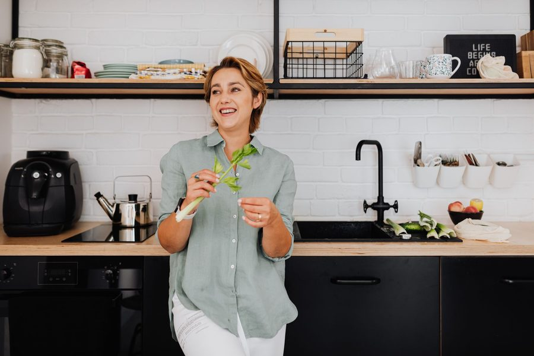

Air fryer: temperatura e tempo para vegetais crocantes sem óleo em excesso
Temperatura e tempo para deixar brócolis, abobrinha e batata crocantes sem ressecar.

Air fryer errada dá dois resultados só: o vegetal murcho e encharcado, ou o vegetal seco e duro como bucha. Os dois vêm do mesmo lugar — temperatura genérica e cesto lotado. Cada vegetal tem um teor de água diferente, e é esse teor que determina a temperatura certa e o tempo certo pra crocância por fora sem ressecar por dentro.
O problema não é a air fryer. É tratar brócolis, abobrinha e batata como se fossem a mesma coisa. Testamos os três junto com pimentão, cenoura e couve-flor pra fechar uma tabela que você usa direto, sem cálculo.
Por que "180°C por 15 minutos" não funciona pra tudo
A air fryer é basicamente um forno de convecção compacto: ar quente circulando em alta velocidade. Esse ar seca a superfície do alimento rápido — é o que cria a casquinha. O problema é que vegetais têm teores de água muito diferentes entre si:
- Aboburinha e berinjela — mais de 90% água, ressecam rápido se a temperatura for alta demais
- Brócolis e couve-flor — florzinhas finas queimam na ponta antes do miolo cozinhar
- Batata e cenoura — mais densas, precisam de mais tempo e mais calor pra crocar de verdade
Usar a mesma temperatura pra esse grupo todo é a raiz do "vegetal murcho" ou do "vegetal ressecado". A técnica muda por vegetal, não por preferência pessoal.
Tabela de temperatura e tempo por vegetal
Temperaturas pra air fryer padrão (cesto, não forno de air fryer maior). Se a sua air fryer for mais potente ou mais fraca, use como referência e ajuste ±2 minutos observando a cor.
| Vegetal | Corte | Temperatura | Tempo |
|---|---|---|---|
| Brócolis | Floretes médios | 190°C | 10-12 min, virando na metade |
| Abobrinha | Rodelas de 1cm | 180°C | 8-10 min |
| Batata | Cubos de 2cm | 200°C | 18-20 min, virando 2x |
| Couve-flor | Floretes médios | 190°C | 12-14 min, virando na metade |
| Pimentão | Tiras largas | 190°C | 8-9 min |
| Cenoura | Bastões finos | 190°C | 14-16 min, virando na metade |
Regra prática: vegetais com mais água (abobrinha, pimentão) pedem temperatura um pouco mais baixa e tempo curto — passar do ponto tira toda a água de uma vez e sobra fibra seca. Vegetais densos (batata, cenoura) aguentam temperatura mais alta porque o miolo demora mais pra cozinhar.
Quanto óleo usar (e por que "sem óleo" não é o objetivo)
A promessa da air fryer é reduzir óleo, não eliminar. Um fio muito fino é o que carrega o calor pra superfície do vegetal e faz a casquinha dourar — sem nenhum óleo, boa parte dos vegetais fica com textura de vegetal cozido no vapor, não crocante.
- A medida certa é 1 colher de chá de óleo pra cada 300g de vegetal, espalhada com as mãos até cobrir tudo de forma fina e uniforme
- Óleo em excesso não deixa mais crocante — deixa encharcado, porque o ar quente não consegue secar a superfície com líquido sobrando no fundo do cesto
- Prefira óleos que aguentam temperatura alta sem soltar sabor de queimado: óleo de girassol ou de canola funcionam melhor que azeite extravirgem, que perde qualidade acima de 190°C
O sinal de que o óleo está na medida certa: depois de misturado, o vegetal parece "seco" ao toque, sem gotejar. Se a tábua embaixo fica com poça de óleo, é sinal de excesso.
Sal e tempero: antes ou depois?
Sal antes de assar puxa um pouco da água do vegetal pra fora, o que ajuda na crocância — mas só funciona bem em vegetais mais densos como batata e cenoura. Em abobrinha e pimentão, que já têm muita água, salgar 10 minutos antes e escorrer o líquido solto faz diferença real na textura final. Ervas secas (orégano, páprica) podem entrar antes de assar; ervas frescas (salsinha, cebolinha) só depois, porque queimam com o ar quente.
O erro mais comum: sobrecarregar o cesto
Esse é o erro que mais aparece em quem reclama que "a air fryer não deixa nada crocante". A air fryer funciona por circulação de ar — o ar quente precisa passar por todos os lados do vegetal. Quando o cesto está cheio até a borda, os pedaços do meio ficam encostados uns nos outros e cozinham no próprio vapor, em vez de assar com ar seco.
- Regra visual: o cesto deve ficar no máximo 2/3 cheio, com espaço pra cada pedaço "respirar"
- Se a quantidade for grande, é melhor fazer duas fornadas do que uma só apertada — o tempo total quase não muda, porque a segunda fornada é mais rápida (o cesto já está quente)
- Vire os vegetais na metade do tempo (ou agite o cesto) pra trocar quais lados ficam voltados pro fluxo de ar
Se sua air fryer é pequena (até 3 litros), talvez você nunca tenha conseguido fazer uma porção grande de brócolis crocante de uma vez só — e o problema nunca foi o vegetal, foi o volume no cesto.
Combinando vegetais na mesma fornada
Dá pra assar mais de um vegetal junto, desde que o tempo de cozimento seja parecido. Batata e cenoura combinam bem (ambos densos, tempo similar). Brócolis e couve-flor também. Já abobrinha não deveria entrar na mesma fornada que batata: a batata ainda estaria crua quando a abobrinha já passou do ponto.
Se quiser variar as combinações da semana sem ficar decorando tempo de cada vegetal, o app Recheio guarda essas referências de tempo e temperatura junto com o cardápio da semana — você marca o que tem na geladeira e ele já sugere qual vegetal assar com qual, sem misturar tempo de cozimento errado.
Essa mesma lógica de acertar temperatura pelo tipo de alimento vale pra outros equipamentos da cozinha — é a mesma ideia por trás da tabela de tempos da panela de pressão, só que aplicada ao calor seco em vez do vapor sob pressão.
Vegetal crocante na air fryer não depende de comprar um equipamento melhor ou de usar mais óleo — depende de três ajustes simples: temperatura certa pro teor de água do vegetal, uma camada fina de óleo espalhada (não um fio jogado por cima) e um cesto com espaço pro ar circular. Comece pela tabela, ajuste ±2 minutos observando a cor na primeira vez que testar um vegetal novo, e depois disso você já sabe o tempo de cabeça.
Receba a próxima técnica por e-mail
Uma edição por semana com o que foi testado na nossa cozinha: tempo, temperatura e quantidade — sem enrolação.
Pronto — anotamos seu e-mail. A próxima edição do Caderno da Semana sai na sexta.
Uma edição por semana, com as receitas e tabelas publicadas nos últimos dias. Sem custo, sem indicação de produto. Para sair, basta responder qualquer edição pedindo o descadastro — detalhes em privacidade.